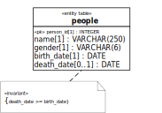
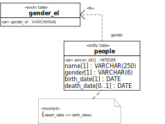

9.3. Coding Table Models
Unfortunately, the degree to which standard SQL-92 is supported differs from DBMS to DBMS. Check, e.g., the MySQL reference manual or the SQLite reference manual.
Summary in 3 Steps
For each table class of the SQL-92 table model, write a corresponding CREATE TABLE statement, including column and table constraints. For a single-attribute primary key, append the SQL keyword PRIMARY KEY to the range declaration in the column definition clause. For a mandatory attribute, append the NOT NULL constraint keyword (recall that attributes are mandatory by default in a UML class diagram). For a unique (or key) attribute, append the UNIQUE constraint keyword. For an attribute with an interval constraint (attached to the class), append a corresponding CHECK clause to the column definition clause.
Figure 9-8. The table class Person
CREATE TABLE people( person_id INTEGER PRIMARY KEY, name VARCHAR(250) NOT NULL, gender VARCHAR(6) NOT NULL, birth_date DATE NOT NULL, death_date DATE, CHECK (death_date IS NULL OR death_date >= birth_date) )For any foreign key dependency arrow, specify a corresponding referential integrity constraint either in the column definition clause with the help of the REFERENCES keyword (this does not work with MySQL/InnoDB), or in the form of a FOREIGN KEY clause after the column definition. Notice that for SQLite and other DBMSs, specifying a column name after the name of the target table is optional; if it is not specified, the foreign key refers to the primary key of the target table. For MySQL, specifying a column name after the name of the target table is mandatory.
 CREATE TABLE gender_el( gender_el VARCHAR(6) PRIMARY KEY ) CREATE TABLE people( person_id INTEGER PRIMARY KEY, name VARCHAR(250) NOT NULL, gender VARCHAR(6) NOT NULL REFERENCES gender_el, birth_date DATE NOT NULL, death_date DATE, CHECK (death_date IS NULL OR death_date >= birth_date) )Alternatively, a foreign key can be defined with a FOREIGN KEY clause after the column definitions:
CREATE TABLE people( person_id INTEGER PRIMARY KEY, name VARCHAR(250) NOT NULL, gender VARCHAR(6) NOT NULL, birth_date DATE NOT NULL, death_date DATE, CHECK (death_date IS NULL OR death_date >= birth_date) FOREIGN KEY (gender) REFERENCES gender_el (gender_el) )If there are any constraints involving several tables, they may be implemented in the form of corresponding CREATE ASSERTION or CREATE TRIGGER statements, if the target DBMS supports these SQL constructs.